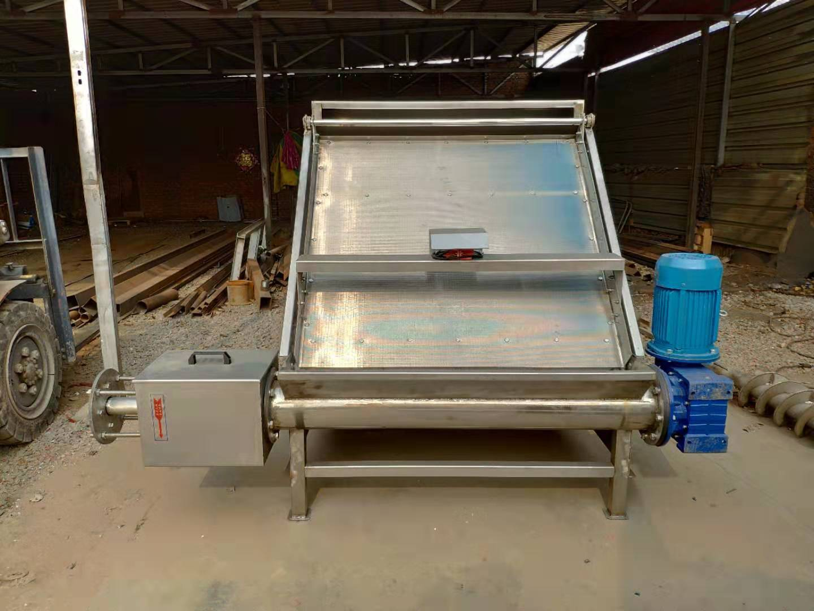

水切式粪便分离机

牧畅，让生态养殖成为新风尚
在养殖场会使用到这款水切式粪便分离机，其具有较高的自动化水平，操作简单易行，且高效低耗，作业效果好的优势，可以连续性的作业。
使用分离机处理牲畜粪便，可以有哪些应用呢？
厂家为您一一列举：
一、分离、脱水之后的粪便属于干性粪便，臭味极小，且粘性也会降低，可以做肥料；
二、饲养鱼，是一种不错的鱼饲料；
在使用水切式粪便分离机的时候，我们一定要首先阅读说明书，或者直接由有经验的人操作实验，保证安全无异常后方可投入正式运行。